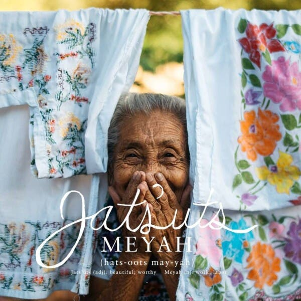
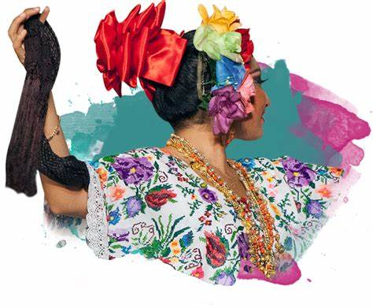

Se cree que su nombre proviene de alguna confusión entre mayas y españoles, cuando los últimos malentendían lo que los primeros les decían. Sin embargo, el confuso nombre de este territorio no importa cuando descubrimos que en él se localizan grandes ciudad mayas habitadas por muchas generaciones de indígenas mayas, incluso en el momento de la llegada de los conquistadores

Un rasgo característico de esta cultura es su pícaro sentido del humor, reflejado durante la celebración de las vaquerías, fiestas celebradas en honor al recuento anual de las de reses y donde los asistentes bailan animadamente una jaranita hasta que alguien grita “¡Bomba!” y procede a recitar un cuarteto picaresco, sello de la identidad yucateca. Su música, conocida como trova yucateca, deleita a audiencias internacionales y es fruto de la amplia influencia cultural que mencionábamos anteriormente. Sus principales expositores de todos los tiempos son Cirilo Baqueiro, Fermín Pastrana, Ricardo Palmerín, Guty Cárdenas, Pastor Cervera y Sergio Esquivel.
Arquitectura, moda y gastronomía son artes que exhiben el latente sentir del yucateco, un sentido de pertenencia más del mundo que de su propia nación.
La cocina yucateca se destaca por la armoniosa combinación de los sabores y olores frescos de limas, naranjas, plátano, achiote y calabaza, entre otros, que hacen de sus platillos típicos, dignos representantes de la riqueza cultural que estas tierras exhiben. La cochinita pibil, la sopa de lima, los huevos motuleños, los papadzules, el poc-chuc y el pan de elote forman parte de este gran legado culinario del sureste mexicano.
La renovación de históricas y grandiosas haciendas coloniales ha resultado en el desarrollo de un turismo de lujo que puede disfrutar de servicios de nivel internacional. Los tours gastronómicos incluyen degustación de la exquisita cocina yucateca y frescas bebidas producidas en haciendas que funcionan como destilerías de ron, licores de frutas tropicales y conservas frutales.
ALGUNAS ATRACCIONES SON:
Dentro de las artesanías de Yucatán que más llamaron la atención a los colonizadores españoles, se encontraban las mantas tejidas por las indígenas mayas, que por su gran calidad llegaron a ser tributos para los encomenderos. Pero la vestimenta tradicional, el hipil y el terno para las mujeres, y la guayabera para los hombres, fueron adaptaciones que se realizaron tomando elementos de distintas procedencias, realizando un mestizaje cultural, de técnicas, de materiales, etc.
El terno es un conjunto que las mestizas usan exclusivamente en las fiestas de la vaquería y con algunas variantes, en las bodas mestizas. En estas ceremonias religiosas la única persona ataviada con el terno es precisamente la novia pero el vestuario difiere de los de la vaquería en el colorido de los ruedos, ya que el que les sirve en las ceremonias nupciales lleva solamente bordados blancos y se complementa con un largo velo de tul que toca el suelo. La cadena salomónica de dos vueltas les sirve como lazo nupcial.
Las guayaberas, prendas masculinas, son un desarrollo de las camisas de manta de una sola pieza, usadas tradicionalmente por los guajiros o campesinos cubanos y por los campesinos mayas. Con el paso del tiempo la guayabera se fue haciendo una prenda más elaborada y elegante, con alforzas, bolsas, botones y, en ocasiones, bordados de grecas.
